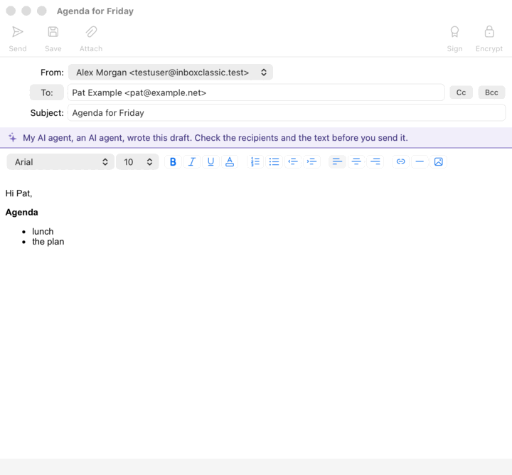

Quando un agente invia posta
Ogni messaggio che un agente IA vuole inviare ti viene mostrato prima, e attende in Posta in uscita prima di partire.
Un agente può inviare posta solo se glielo hai permesso, e richiede la tua conferma per ogni messaggio.

Quando l’agente vuole inviare, Inbox Classic mostra il messaggio con l’indirizzo completo di ogni destinatario. Gli indirizzi a cui non hai mai scritto sono segnati con Nuovo indirizzo.
- Leggi i destinatari e il testo.
- Scegli una di queste opzioni:
- Invia mette il messaggio in coda per l’invio. Il pulsante si attiva dopo un breve intervallo per ridurre il rischio di conferme accidentali.
- Modifica prima dell’invio apre il messaggio in una finestra di composizione per modificarlo.
- Non inviare, la scelta predefinita, non lo invia.
Ogni programma può avere un solo messaggio in attesa della tua conferma. Se non rispondi subito, Inbox Classic informa l’agente che la tua risposta è ancora in sospeso. L’agente può controllare più tardi che cosa hai deciso. Per impostazione predefinita, i messaggi e le bozze dell’agente includono il testo della firma del tuo account. L’agente può anche ometterlo.
Un messaggio dell’agente che approvi attende 30 secondi in Posta in uscita. Finché è ancora in Posta in uscita, puoi eliminarlo da lì, oppure fare clic su Annulla in Strumenti > Agenti IA.
Risposte agli inviti
Un agente che può inviare posta può accettare, accettare con riserva o rifiutare un invito del calendario per te. La risposta viene mostrata nella stessa finestra di conferma. Sopra il testo viene indicato a quale invito risponde il messaggio e quando si svolge l’evento. Inbox Classic scrive la risposta all’organizzatore a partire dall’invito stesso, quindi il messaggio non può essere aperto per modificarlo prima. La risposta di calendario non include il testo della firma dell’account. Inbox Classic aggiorna la tua risposta quando il server accetta l’invio, senza attendere una conferma dall’organizzatore.
Bozze scritte da un agente
Quando apri una bozza scritta da un agente, il nome dell’agente compare sopra il testo del messaggio. Controlla i destinatari e il testo prima di inviarla.

Un agente può modificare o eliminare solo le bozze che ha creato. Quando salvi o invii una di queste bozze, l’agente non può più modificarla né eliminarla. Questo vale anche quando Inbox Classic salva automaticamente le tue modifiche. Se apri soltanto la bozza, l’agente può ancora modificarla. Quando elimina una propria bozza, ne richiede la rimozione definitiva.